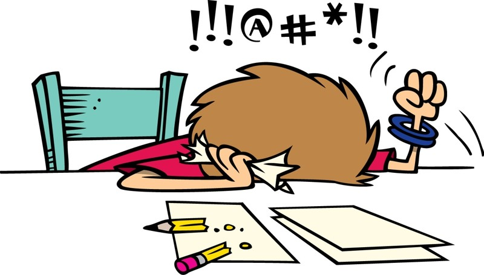
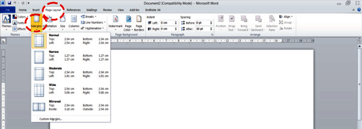
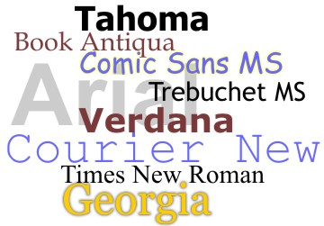

17 Super-Useful Posts About Story Ideas, Article Writing, Interviews, and Editors
Posted by Carol Tice
You will have 17 links to check out and waste time on.
Click here to start surfing!First you should stare at the blank page for 3 days.
Next, start writing/typing only to delete what you wrote or throw the page away no less than 10 times.
If you need more ideas on what to write, look online and get lost surfing the web for another few days. You can start here:
You will have 17 links to check out and waste time on.
Click here to start surfing!If you are writing by hand, after you have a paragraph, type it onto the computer and realize that it takes up way less space. Bang your head of your desk.
Adjust the margins. Change the margin to 2", then realize the instructor will notice. Go back and change it to 1.1" because every little bit helps.
Make sure you are using 5 or 6 spaces for indents, 2 spaces after sentences, and double return between paragraphs and at the end of the page if possible. This will strecth your writing to fill up more pages.
The last step is changing the font. The font can add an extra page or more depending on the length of your paper. Play around with different fonts to get the length you need without looking too obvious.
